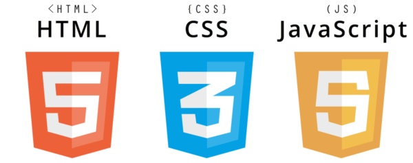

Congratulations!
It looks like you may be a good fit for one of our programming tracks!
Just as it is important to make sure that you have the right personality to work in the programming world in general- it is also a good idea to gauge what kind of work environment you will thrive in:
- Would you like to work with a large company with more structure?
- Or rather: smaller teams, risk/reward of startups?
- Are you more geared towards design (front end) or function/logic (back end programming)?
If you're ready to commit, we're here to help!
Take a look at the different tracks that are available through Epicodus below, and then use the contact form to get in touch with us! We're rooting for you!
Programming Tracks

Our Design Track:
HTML, CSS, and Javascript- along with their libraries and frameworks- are used in conjunction to create dynamic webpages. These 3 languages are used in almost all webpages.
Who should Choose Our Design Course?
If you are much more interested in the appearance of applications (front end/user interface) than the back-end logic, then this is the course for you!
More info:
For more information about the design track and it's related courses,click here.

Who Uses Ruby? What For?:
Ruby and it's framework (Rails) are used primarily in web application development.
About the Ruby Language:
Ruby is is "a dynamic, reflective, object-oriented, general-purpose programming language" (Wikipedia).
The syntax of Ruby is fairly simple, and is similar to Python in it's format. It is generally regarded as an "easier-to-learn" programming language.
Who should learn Ruby?
If you are interested in smaller business, startup business, and/or web application development, Ruby is a great place to start!
More info:
Check out our page with more information about the Ruby track and courses.
Also, this siteprovides a great breakdown of Ruby.

Who Uses C#? What for?
C# and .Net are the programming language/framework that runs the majority of Microsoft applications.
About the C# programming language:
"C# is an object-oriented programming language from Microsoft that aims to combine the computing power of C++ with the programming ease of Visual Basic. C# is based on C++ and contains features similar to those of Java."" (reference).
Who should learn C#?
If you are interested in developing games on a Windows platform, or creating applications that work on a Windows platform- this is the track for you!
More info:
Our course description for C# can be found here.
If you still want more information, this site provides a great summary of C# as a programming language.

Who uses Java? What for?
About the Java programming language:
"Java is a general-purpose computer programming language that is concurrent, class-based, object-oriented, and specifically designed to have as few implementation dependencies as possible. It is intended to let application developers "write once, run anywhere" (WORA), meaning that compiled Java code can run on all platforms that support Java without the need for recompilation.
Java applications are typically compiled to bytecode that can run on any Java virtual machine (JVM) regardless of computer architecture. As of 2016, Java is one of the most popular programming languages in use, particularly for client-server web applications, with a reported 9 million developers." (Wikipedia)"
Who should learn Java?
More info:
Our course description for Java can be found here.
For more information, this site has excellent summaries of the most common programming languages, including Java.

Who uses PHP? What for?
About the PHP programming language:
Who should learn PHP?
More info:
Our course description for PHP can be found here.
For more information, this site has excellent summaries of the most common programming languages, including PHP.
All right! It's time to take stock of the situation!
Take some time to honestly consider:
Is this really a career you will thrive in?
We are absolutely here for anyone who is ready to step into this challenging and rewarding career!